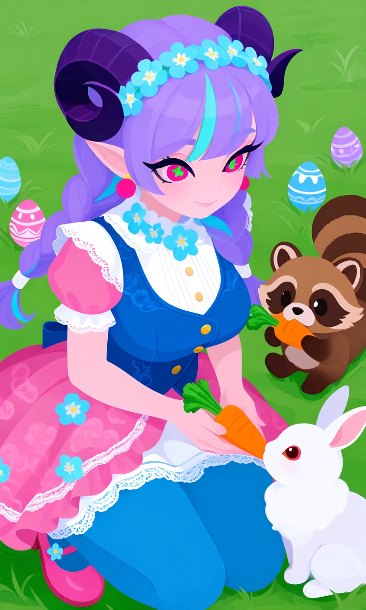
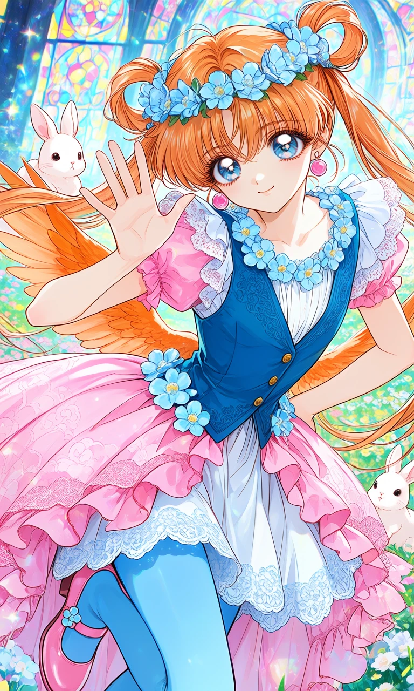

Forget-Me-Not Frolic

Outfit Prompt
She is wearing a light blue flower crown and circle pink earrings. She is wearing a white, short-sleeved blouse with delicate ruffled lace trim on the pink short puffy sleeves and light blue flowers on the neckline. A fitted, sleeveless blue vest worn over the blouse. It has a decorative front with small gold buttons down the center and what appears to be subtle embroidered or patterned details. The pink skirt has a subtle, faint cloud-like or scalloped pattern printed on the fabric, ruffles and lace trim along the hem, the pink skirt is a High-low bustle skirt. There’s a white underskirt with pale blue scalloped lace. On the hip of the skirt is light blue flowers. She is wearing Opaque blue tights that match the blue of the vest. she is wearing pink mary janes with a light blue flower button on the shoes.
Outfit Examples



